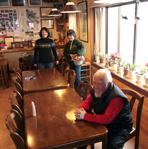

One of the best-known names in the Shin-Akakura area, the Ohno family are leaders in the Myoko skiing community. Father Kiyoshi, now in his 80s, is still active both in the hotel and in the ski community. Son Shigeyuki and his wife Masako will be your hosts; “Shige” is both an accomplished ski racer and a coach for local junior racers, while daughter Chiharu (not in the photo) is now a winning racer on the high-school circuit.
Having been in Myoko for generations, they are keen to share the beauty of the four seasons of the area with their guests. You’ll feel very much at home in Lodge Ohno, whether just relaxing in your room or meeting new friends by the fireplace. Come on down to the dining room in the evening,
order a cold drink and some snacks, and share a friendly, family atmosphere.

Enjoying an afternoon with guests in the dining room